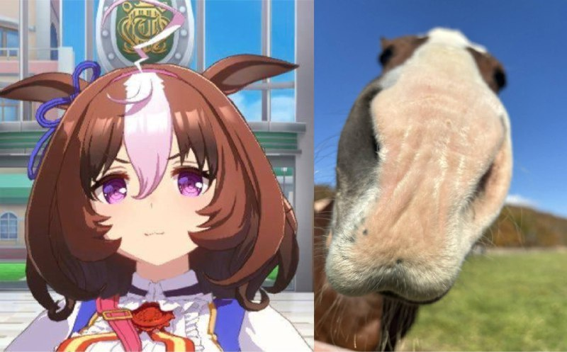
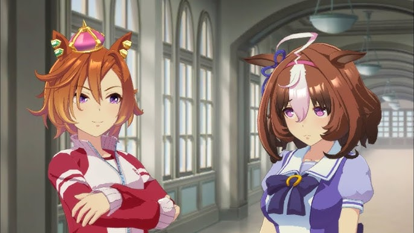
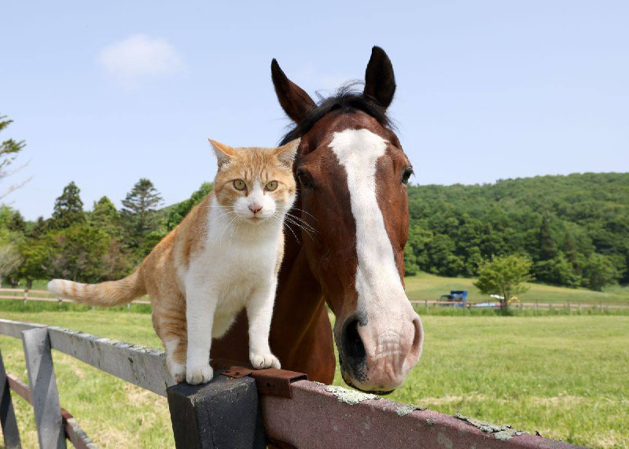
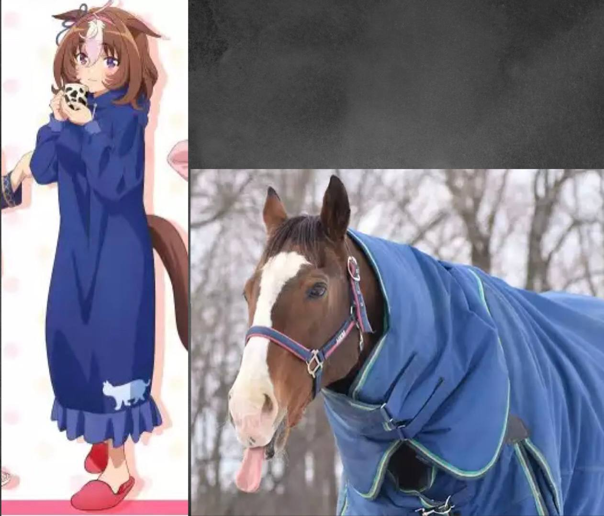

У Мэйсё Дото короткие каштановые волосы, завивающиеся внутрь, обрамляя ее лицо. У нее
большая белая прядь посередине челки, а также белый завитой хохолок в форме зигзага. У нее
фиолетовые глаза с зрачками в форме спирали. Ее уши часто изображают опущенными вниз, а на правом
ухе у нее голубая лента, она также носит розовую повязку на голове.
Ее гоночный наряд напоминает костюм почтальона: белый топ с воротником-стойкой и синее
платье-комбинезон. Топ украшен оборками по центру и воротником с двумя черными полосками прямо
над нижним краем. Рукава украшены кружевными оборками, которые завязываются розовой лентой.
На ней белые перчатки с такими же кружевными оборками и розовыми манжетами с белой полоской
посередине. Бант на воротнике напоминает восковую почтовую марку, на которой изображена подкова.
К банту прикреплены две ленты красного цвета с вертикальной желтой полосой. У нее также коричневая
сумка-мессенджер с золотой каймой и розовым ремешком, который пересекает ее тело по диагонали. В
центре - еще один бант, а с правой стороны свисает брелок в виде морковки. Ее платье украшено
золотыми пуговицами и вставками, а по низу - темной полосой. Нижняя сторона складок красного
цвета, а из-под платья выглядывают кружевные полоски. На ней простые белые мокасины с розовыми
лентами и чулки с чередующимися синими и красными вставками полосками.
В Uma Musume у всех лошадей есть украшение (обычно бантик) на одном из ушей. Украшение на правом ухе
означает, что настоящая лошадь была жеребцом, на левом ухе — кобылой. У Мэйсё Дото бантик на правом
ухе, т.к Мэйсё Дото в реальной жизни действительно является жеребцом.
Каштановые волосы и белая прядь на челке Мэйсё Дото напоминают окрас настоящей лошади.
Голубые и розовые элементы дизайна гоночного наряда Мэйсё Дото напоминают цвета жокейского шелка
настоящей лошади.
Мэйсё Дото на Arima Kinen 2000
Рот Мэйсё Дото в игре напоминает мордочку кота, что основано на необычной форме морды настоящего
Мэйсё Дото.

Мордочка Мэйсё Дото
Сумка, которую Мэйсё Дото носит в своем гоночном наряде, была добавлена по просьбе её дизайнера.
Это потому, что раньше у нее была такая сумка, подаренная ей мамой, чтобы, когда она падала из-за
неуклюжести, она могла привести себя в порядок. В этой сумке лежат такие вещи, как бинты и полотенца.
Подходящий аксессуар, учитывая неуклюжесть Мэйсё Дото в игре.
О Мэйсё Дото
Мэйсо Дото (родился 25 марта 1996 года) - чистокровная скаковая лошадь ирландского
происхождения, прошедшая тренировки в Японии, жеребец. За свою гоночную карьеру он занял второе место
в 5 гонках G1, уступив своему сопернику Т.М. Опера О, и стал известен как "коллекционер серебра".
В 2001 году он победил своего соперника на Такаразука Кинен и выиграл свою первую гонку G1.
В том же году окончил свою карььеру и ныне проживает на ферме.
Имя на японском: メイショウドトウ
История гонок: [10-8-2-7], включая победу в гонке Таразука Кинен 2001.
Интересные факты
Настоящий Мэйсё Дото
Её соперничество с Т.М. Опера О в игре основано на их соперничестве в реальной жизни. Также Мэйсё Дото в
игре стеснительная и неряшливая в противовес нарцистичной и самоуверенной сопернице.

Мэйсё Дото и Т.М. Опера О в игре
Мэйсё Дото дружит с Тайки Шаттл. Это основано на дружбе настоящих Мэйсё Дото и Тайки Шаттл, которые
оба ушли на пенсию и стали проживать на ферме Versailles, а затем и на ферме Northern Lake. Их часто
видели вместе, пока Тайки Шаттл не скончался в 2022 году.
Настоящий Мейсё Дото очень любит мелких животных. Ему нравится, когда его окружают фермерские козы.
Раньше он даже позволял дикому тануки оставаться в его хлеву зимой (на этом также основана анимация Мэйсё Дото
в её Хеллоуинском костюме).
Анимация Мэйсё Дото в Хэллоуинском костюме
Мето — кот, проживающий на ферме Northern Lake вместе с Мэйсё Дото. Дото долго пытался
подружиться с ним, но безуспешно. Он впадал в депрессию, но никогда не оставлял попыток, пока Мето
наконец не проникся к нему симпатией. В итоге в 2022 году он добился успеха, и с тех пор они были
почти неразлучны. Примерно в это же время в аниме-адаптации Uma Musume появился кот, похожий на Мето.
В эпизодах он появлялся рядом с Мэйсё Дото и садился на её голову.
Мето также был упомянут по имени в игре в сюжетном сценарии Нео Юниверс.

Мэйсё Дото и кот Мето
В Uma Musume: Pretty Derby у каждой лошади есть эксклюзивный титул, получение которого как-то связано
с историей настоящей лошади. Титул Мэйсё Дото «Indomitable Challenger» (англ. «Неукротимый Соперник»)
требует от игрока победить в 9 крупных гонках за Мэйсё Дото, включая Тенноушоу (Весна), Таразука Кинен и
Арима Кинен, повторяя карьерный путь настоящего Мэйсё Дото, если бы он выиграл во всех гонках против
Т.М. Опера О.
Поскольку настоящая лошадь показывала отличные результаты на средних и длинных дистанциях,
беговой стиль Мэйсё Дото в игре так же ориентирован на средние и длинные дистанции.
Пижама Мэйсё Дото, представленная на официальной иллюстрации, приуроченной к коллекции мерча
"Дорога к вершине", отсылает как к зимнему пальто настоящего Мэйсё Дото, так и к коту Мето (он изображен
внизу её платья).

Мэйсё Дото на официальной иллюстрации и в реальной жизни
Первый секрет в описании Мэйсё Дото в игре гласит: "Она любит, чтобы ее блюда были очень острыми".
Это отражает предпочтения Ясухико Ясуды, основного жокея Мэйсё Дото.
Второй секрет в описании Мэйсё Дото в игре гласит: "Когда она смотрит в глаза козлу, она каким-то
образом понимает, что тот чувствует".
Настоящий Мэйсё Дото любит мелких животных. Ему также нравится, когда его окружает много коз.